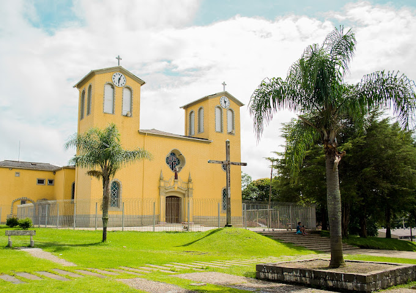
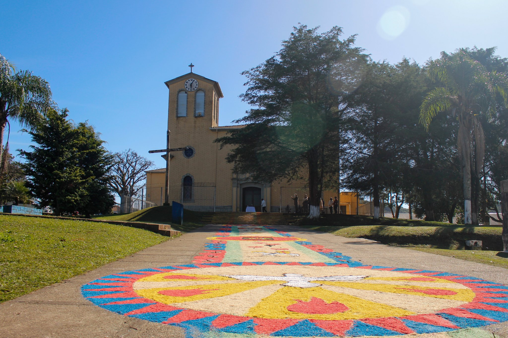
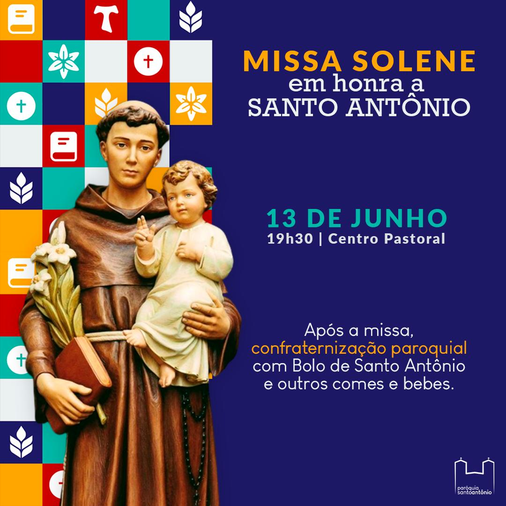
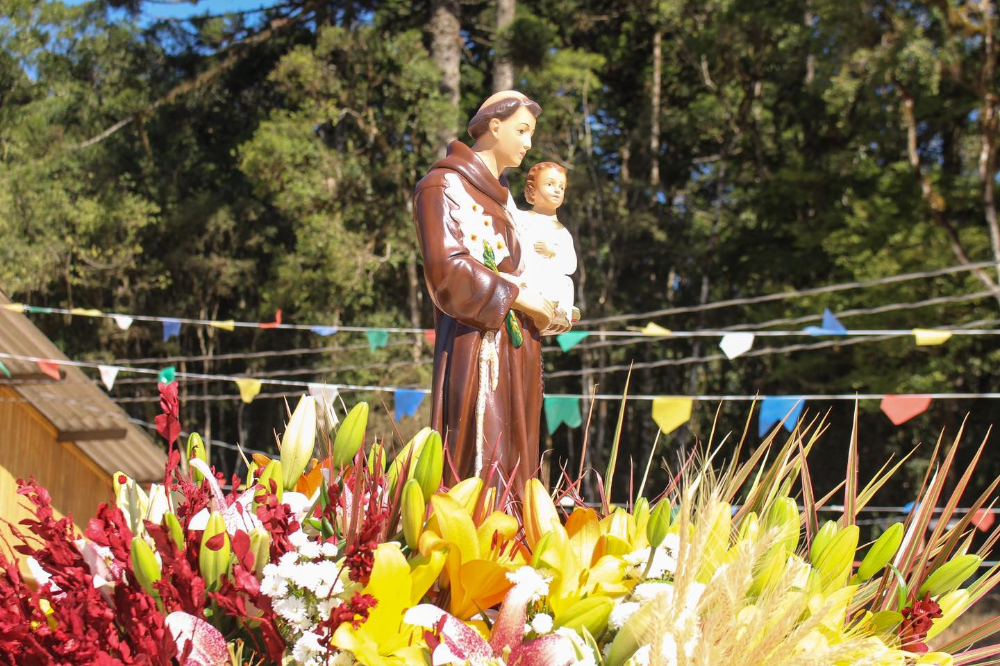
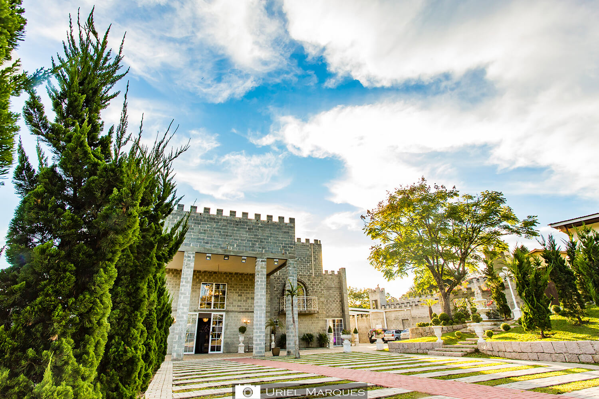
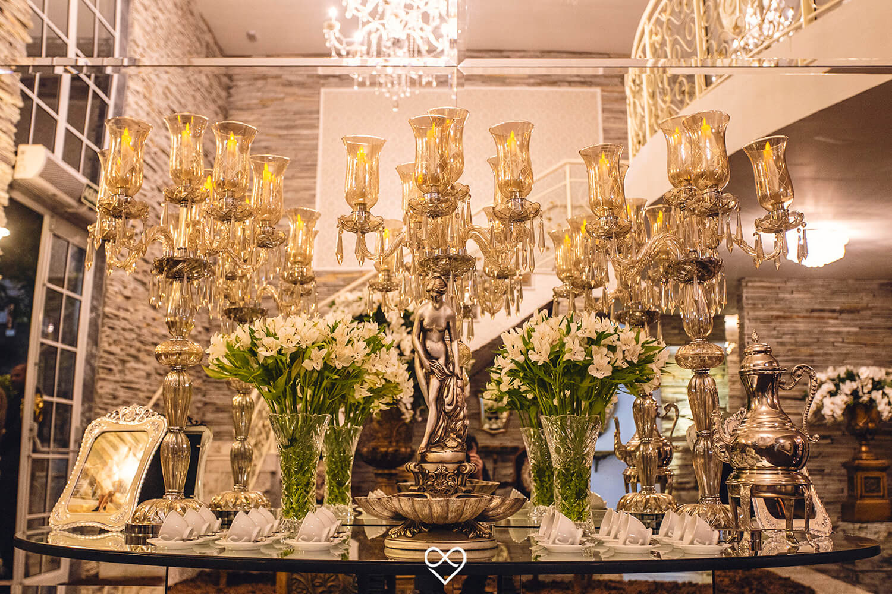
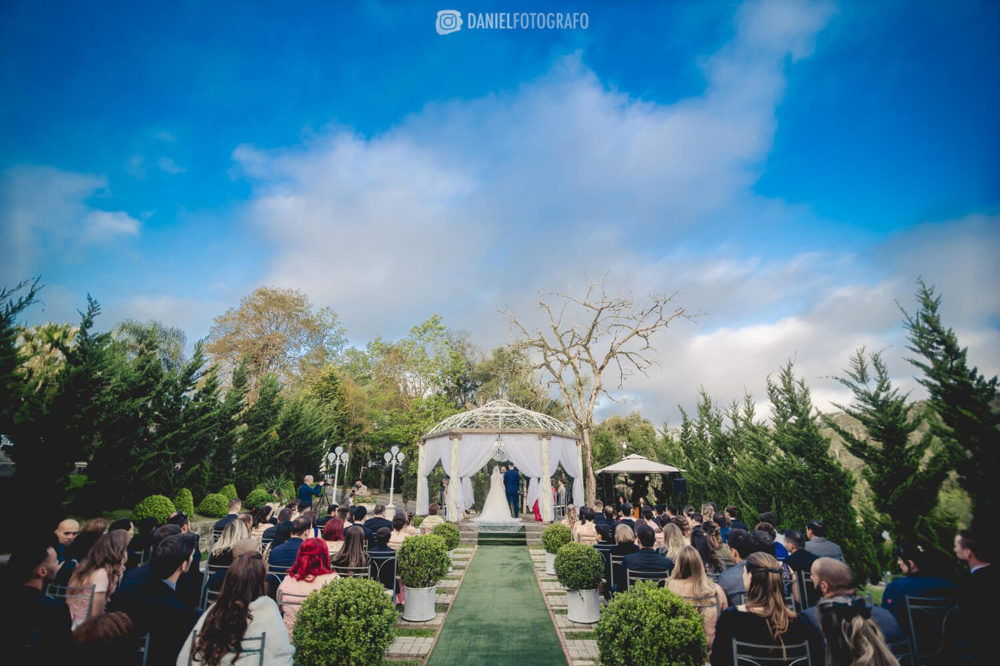
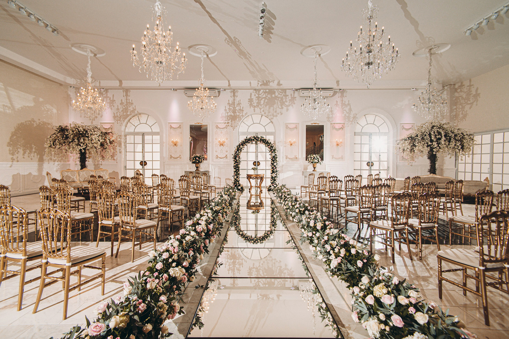

Roteiro da Cidade
Bocaiúva do Sul, no Paraná, oferece atrações incríveis. Visite a Paróquia Santo Antônio, uma igreja católica deslumbrante. No Morro da Cruz, aprecie a vista panorâmica. Explore os mirantes e desfrute das paisagens pitorescas. Interaja com animais na Vila dos Animais. Divirta-se nos parques de diversões. Conheça as fazendas locais e sua tradição agrícola. Não perca o encantador Castello Reale e a Casa do Colono Italiano Eugênio para mergulhar na história e cultura. Bocaiúva do Sul é rica em beleza, cultura e diversão.
Paróquia Santo Antônio
   A Paróquia Santo Antônio de Bocaiúva do Sul, no Paraná, é uma bela igreja católica dedicada a Santo Antônio. Sua arquitetura impressionante e atmosfera serena atraem visitantes em busca de paz e espiritualidade. Além das celebrações religiosas, a paróquia desempenha um papel importante na comunidade local. Localizada em uma cidade cercada por paisagens naturais deslumbrantes, os visitantes também podem desfrutar de atividades ao ar livre e explorar a cultura local. É um destino imperdível para quem busca uma experiência espiritual e cultural enriquecedora.
Castello Reale
   Situado em um cenário deslumbrante, o Castello Reale, projetado pela renomada empresa Sandra Mara Eventos, é um encantador centro de eventos que atrai turistas em busca de experiências memoráveis. Com sua arquitetura imponente e atmosfera mágica, o Castello Reale é o local ideal para celebrar casamentos, aniversários, bailes de formatura e eventos corporativos de uma maneira verdadeiramente única. Localizado em uma região de tirar o fôlego, o Castello Reale oferece aos visitantes a oportunidade de imortalizar os momentos mais especiais de suas vidas em um ambiente encantador e pitoresco. Se você está em busca de um destino turístico extraordinário, não deixe de conhecer o Castello Reale e vivenciar toda a sua magia e beleza.